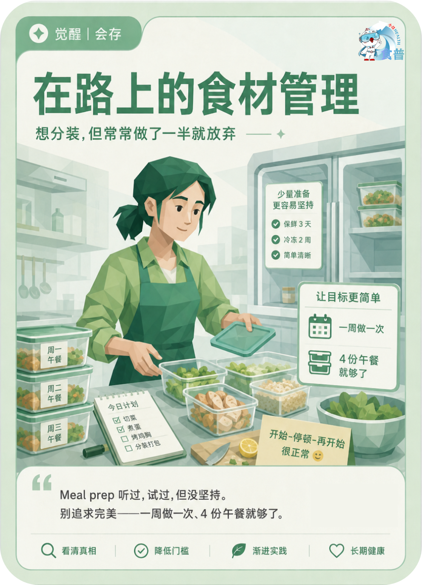

体重管理人群
觉醒
会存
W12
在路上的食材管理
想分装,但常常做了一半就放弃
Meal prep 听过,试过,但没坚持。别追求完美——一周做一次、4 份午餐就够了。
手机端可点击“打开原图”后长按图片保存；也可以直接长按上方图卡保存。

想分装,但常常做了一半就放弃
Meal prep 听过,试过,但没坚持。别追求完美——一周做一次、4 份午餐就够了。
手机端可点击“打开原图”后长按图片保存；也可以直接长按上方图卡保存。